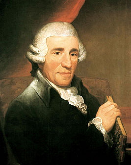

Гайнд — австрийский композитор, представитель венской классической школы, один из основоположников таких музыкальных жанров, как симфония и струнный квартет. Создатель мелодии, впоследствии лёгшей в основу гимнов Германии и Австро-Венгрии. Сын каретного мастера.Композитор создал 24 оперы, написал 104 симфонии, 83 струнных квартета, 52 фортепианные (клавирные) сонаты, 126 трио для баритона, увертюры, марши, танцы, дивертисменты для оркестра и разных инструментов, концерты для клавира и других инструментов, оратории, различные пьесы для клавира, песни, каноны, обработки шотландских, ирландских, валлийских песен для голоса с фортепиано (скрипкой или виолончелью по желанию). Среди сочинений 3 оратории («Сотворение мира», «Времена года» и «Семь слов Спасителя на кресте»), 14 месс и другие духовные произведения.
